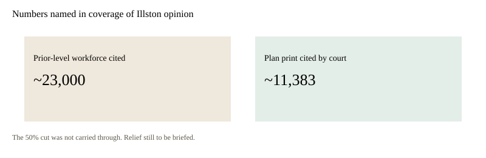

United States · courts · 13 September 2026
A federal judge held that a DHS plan to cut FEMA staffing by about half was unlawful.

images/fema-hero.svg.
What is agreed across desks
U.S. District Judge Susan Illston, in the Northern District of California, issued an opinion late Friday, 11 September, on summary-judgment motions in a labor case against the Department of Homeland Security and the Federal Emergency Management Agency. Associated Press, Reuters via USA Today, The Hill, and the Washington Post’s pickup all describe the same holding: DHS acted unlawfully when it directed a staffing plan that halved FEMA’s workforce and when it took over personnel decisions that the disaster agency had historically made.
The opinion is described as 32 pages. Illston wrote that DHS “unlawfully usurped the authority” of FEMA “to make its own personnel decisions.” She also wrote that DHS “acted arbitrarily and capriciously when it revoked FEMA’s long-standing authority to renew CORE appointments.” CORE employees are on-call disaster workers on multi-year appointments. The Post-Katrina Emergency Management Reform Act of 2006 says the Homeland Security secretary “may not substantially or significantly reduce the authorities, responsibilities, or functions” of FEMA.
AP notes that the 50 percent cut was not ultimately carried out in full and that some previously let-go staff were later rehired after leadership changes. Illston did not order a specific numerical remedy on Friday. She told the parties to meet and confer on the scope of relief, with further briefing expected.
What is only a quote
The sentence most repeated from the bench — that the staffing-plan number “appears as if pulled from thin air” — is the judge characterizing the administrative record. It is not a finding that a named official invented a percentage as a joke. Coverage quotes her asking where the 50 percent came from if FEMA supervisors and the then chief human-capital officer did not recommend it.
Plaintiffs are unions led by the American Federation of Government Employees. Defendants are federal agencies. Calling the case “unions versus Trump” is a frame. The caption is unions versus the agencies that issued the directives.
Mechanism a reader needs
FEMA sits inside DHS. After Hurricane Katrina, Congress tried to keep the disaster agency from being treated as an ordinary office that a secretary could shrink at will. That is why a personnel directive can become a statutory fight rather than an ordinary reorganization memo.
CORE appointments were historically renewed for two years, later sometimes four. The record described in the opinion says DHS later allowed only shorter renewals even after the wholesale non-renewal campaign stopped in January 2026. A court can find a past usurpation unlawful and still face a present-tense workforce that no longer matches the complaint. That is why remedy is deferred.
A separate piece of the same docket, mentioned by Reuters, faulted officials for using Signal on personal phones and deleting messages about staffing. That is a records issue. It is not the same holding as the 50 percent plan.
What this story is not
It is not a statement that FEMA now has a court-ordered headcount. It is not a forecast of hurricane deaths. It is not a biography of Kristi Noem, who is named in filings as a former secretary in the period of the directives. It is not a finding that every termination in 2025 was illegal. The opinion as reported is about authority and a specific plan.
Geography of the case matters only as docket fact. Illston sits in San Francisco. FEMA headquarters is in Washington. Disasters happen everywhere. Clinton appointment is biography. It is not the holding.
Staffing numbers in the coverage are not a current org chart. “About 23,000” and “11,383” describe a plan and a baseline in the record, not the badge count on Sunday. AP’s sentence that the 50 percent cut was not carried out is the present-tense fact.
Hurricane season runs through 30 November. A court opinion in mid-September arrives while the season is still open. Weather is not in the caption. The caption is personnel authority under a 2006 act.
Signal deletions, if proved as a records violation, can support an inference about why the administrative record looks thin. They do not, standing alone, prove that a 50 percent target was invented in a chat. Illston’s “thin air” line is about the absence of reasoned analysis in the record she was given.

Source articles and scores
| Outlet | Headline | T | N | C |
|---|---|---|---|---|
| AP | Federal judge rules Trump DHS plan for 50% FEMA staffing cuts was unlawful | 96 | 0 | 100 |
| USA Today / Reuters | Trump administration bid to halve FEMA workforce broke law, judge rules | 94 | 0 | 98 |
| The Hill | Federal judge says DHS unlawfully 'usurped' FEMA | 90 | −8 | 92 |
| ADN / Washington Post | Federal judge rules Trump plan to cut FEMA by 50% was unlawful | 93 | −10 | 95 |
Images: Wikimedia Commons FEMA seal via Special:FilePath (PD-USGov). Chart is a local SVG. Event courtroom pixels were not copied.